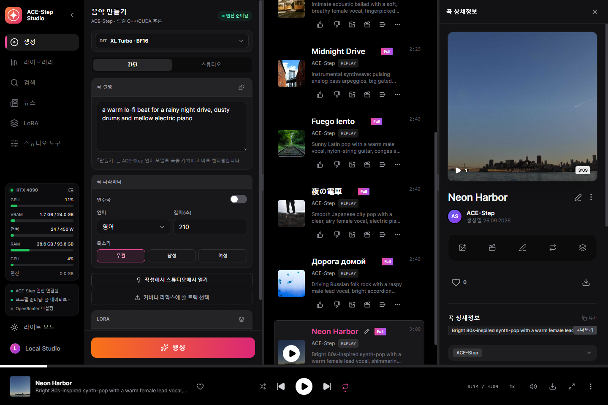
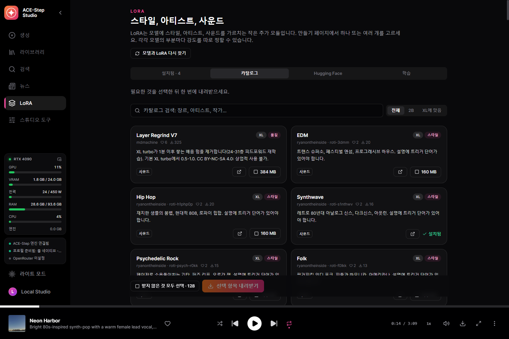
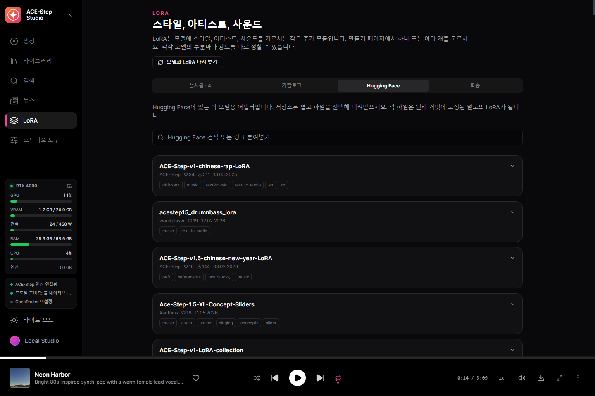
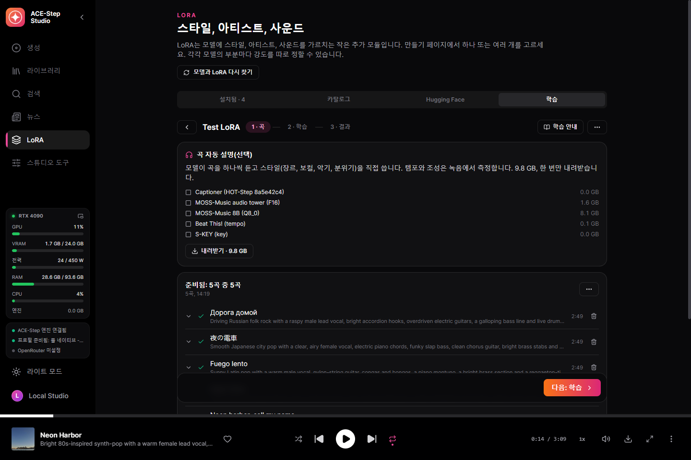
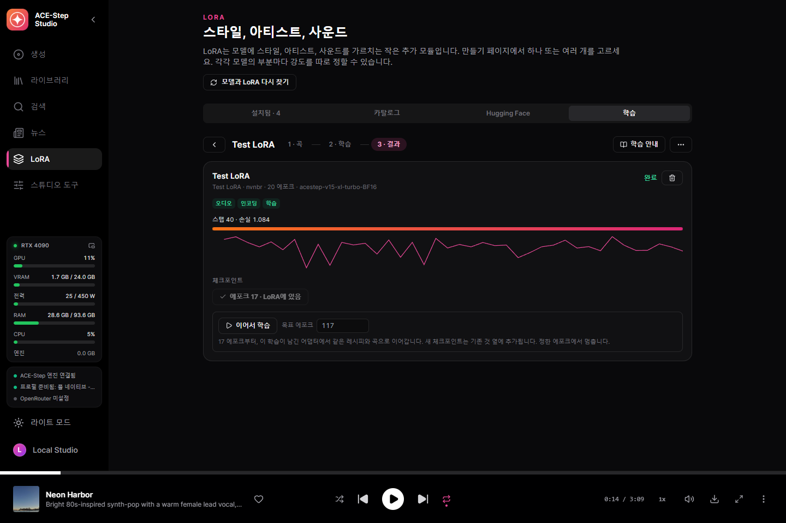
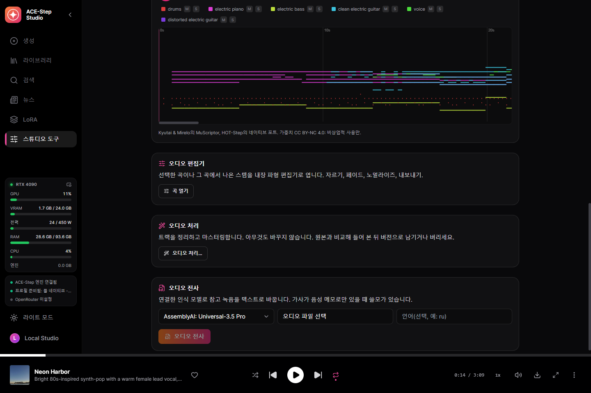
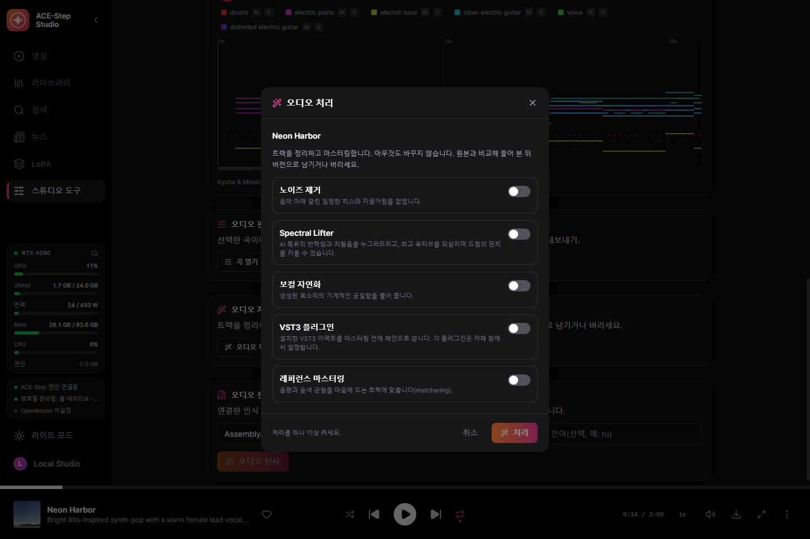
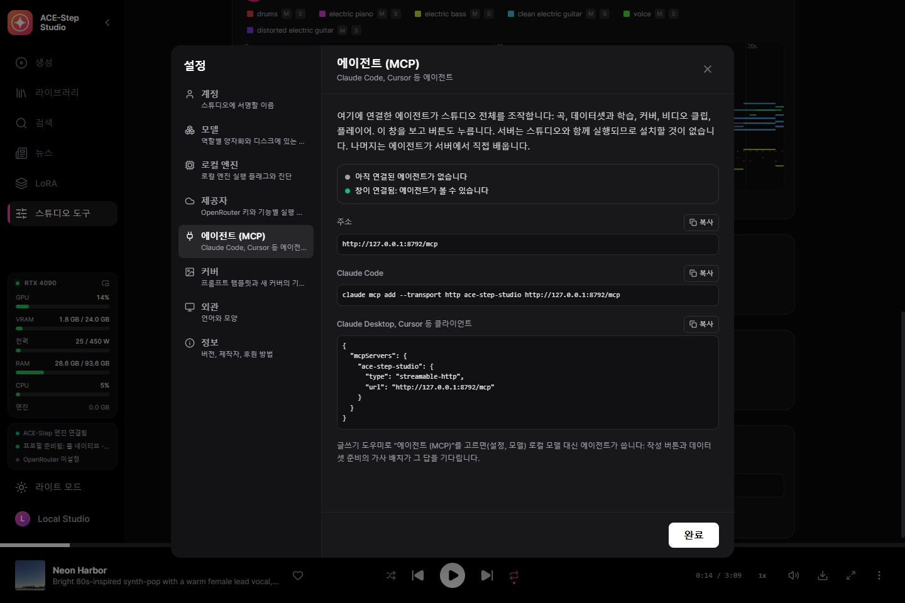
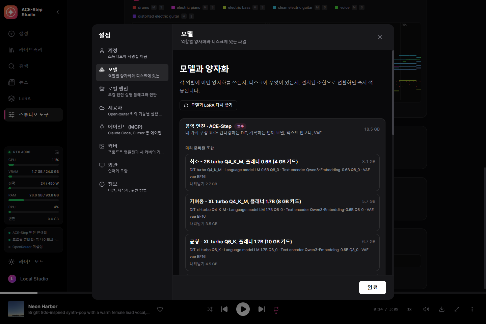

내 GPU에서, 보컬이 있는 완성곡
완성곡을 쓰고 부르는 오픈 음악 모델 ACE-Step 1.5를 위한 데스크톱 스튜디오. 소리를 설명하고 가사를 쓰면, 혹은 한 줄만 주면, 언어 모델이 곡을 설계하고 내 그래픽카드에서 불러 줍니다. 네이티브 C++ 엔진 acestep.cpp 기반의 exe 하나, Python도 런처도 필요 없습니다.
Windows 10/11 x64와 VRAM 4 GB 이상의 NVIDIA GPU(GTX 900 이상). 모델은 원할 때 스튜디오 안에서 내려받습니다.
할 수 있는 일
직접 클라우드 키를 연결하지 않는 한, 아래 모든 것이 내 컴퓨터에서 돌아갑니다.
완성곡
캡션과 가사로 최대 10분. ACE-Step의 플래너가 비워 둔 것(템포, 키, 길이, 가사까지)을 채우고 DiT가 렌더링하기 전에 구조를 설계합니다.
한 줄로 만드는 곡
간단 폼: 아이디어를 넣으면 완성곡이 나옵니다. 작사 어시스턴트나 ACE-Step 플래너가 쓰며, 둘이 동시에 쓰지 않습니다.
모든 ACE-Step 모델
2B와 XL DiT(turbo, SFT, base, 병합 모델, 커뮤니티 파인튜닝)를 Q4부터 BF16까지, 생성 폼 위에서 전환. 플래너는 0.6B, 1.7B, 4B.
커버, 리믹스, 리페인트
라이브러리의 곡을 새 스타일로 렌더링하고, 리믹스하고, 일부를 리페인트하거나, base 모델로 스템을 추출·추가·완성합니다.
정확한 재현
모든 트랙은 요청과 오디오 코드를 저장: 비트 단위로 다시 렌더링하거나 다른 스텝, 새 시드, 여러 테이크로.
200개의 예제
ACE-Step 자체 예제 요청을 한 번의 클릭으로 불러오기.
작사 어시스턴트
로컬 Gemma, OpenRouter 또는 내 에이전트가 ACE-Step 공식 작사 규칙에 따라 아이디어로 캡션과 가사를 씁니다.
LoRA 카탈로그
좋아요와 다운로드 수로 Hugging Face에서 고른 131개의 LoRA, 설명과 제작자 포함. Hugging Face 전체도 검색하며, 각 파일은 내려받기 전에 맞는 모델 크기를 확인합니다.
나만의 LoRA
한 아티스트나 스타일의 곡이 HOT-Step 트레이너와 LoKR 레시피로 내 그래픽카드에서 LoRA가 됩니다. 모든 설정을 바꿀 수 있고, 체크포인트는 한 번의 클릭으로 LoRA 라이브러리에.
끌어다 놓으면 데이터셋
폴더를 놓으면: 가사는 플레이어가 쓰는 데이터베이스에서 그대로, Whisper는 어디에도 없는 곡만 듣고, MOSS-Music이 모든 곡을 듣고 설명합니다. 다시 시작해도 멈춘 곳에서 이어집니다.
단어 단위 가라오케
모든 단어에 타임스탬프가 있는 확장 LRC, Parakeet 또는 Whisper로 정렬.
스템과 MIDI
HT-Demucs로 6개 스템, MuScriptor로 어떤 곡이든 다중 악기 MIDI로, 피아노 롤을 원곡과 함께 재생.
오디오 처리
노이즈 제거, Spectral Lifter, 보컬 자연화, 내 VST3 플러그인, 레퍼런스 마스터링.
에이전트로 조작(MCP)
Claude Code, Claude Desktop, Cursor를 연결하면 에이전트가 스튜디오의 모든 일(163개 도구)을 하고, 창을 보고 조작합니다. ACE-Step 작사 규칙이 함께 오므로 에이전트가 직접 곡을 씁니다.
이것으로 만든 곡
릴리스 빌드의 새 설치에서, 스튜디오가 저장한 그대로 렌더링.
스크린샷
이 언어로 본 스튜디오.









모델
실행 가능한 세트는 DiT, 플래너, 텍스트 인코더, VAE이며 모두 GGUF입니다.
| 내 GPU | 세트 | 다운로드 |
|---|---|---|
| 24 GB | 풀 네이티브 — XL turbo BF16, 플래너 4B BF16 | 19.9 GB |
| 13 GB+ | 품질 — XL turbo Q8_0, 플래너 4B Q8_0 (권장) | 10.9 GB |
| 10 GB+ | 균형 — XL turbo Q6_K, 플래너 1.7B | 7.2 GB |
| 8 GB+ | 가벼움 — XL turbo Q4_K_M, 플래너 1.7B | 6.1 GB |
| 4 GB+ | 최소 — 2B turbo Q4_K_M, 플래너 0.6B | 3.3 GB |
스튜디오가 그래픽카드가 돌릴 수 있는 세트를 미리 고르지만, 내려받을지는 항상 내가 정합니다. 모든 파일은 고정된 Hugging Face 리비전과 SHA-256으로 확인하고, 중단된 다운로드는 이어받습니다.
시작하기
- 설치 — 설치 프로그램을 실행하거나 포터블 압축 파일을 아무 곳에나 풉니다.
- 세트 선택 — 첫 화면이 그래픽카드가 돌릴 수 있는 것을 고르고, 부족한 것만 내려받습니다.
- 쓰기 — 캡션과 가사, 예제, 또는 간단 폼에 한 줄.
- 생성 — 엔진이 저절로 시작되고 곡이 라이브러리에 들어갑니다.
무엇이 어디서 도나
기본은 모두 로컬. 클라우드 키는 고른 기능을 위해 직접 추가합니다.
| 부분 | 실행 위치 | 크기 |
|---|---|---|
| ACE-Step 엔진(acestep.cpp) | 내 그래픽카드: CUDA, Vulkan 또는 CPU | 포함 |
| ACE-Step 모델 세트 | 내 그래픽카드 | 3.3~19.9 GB |
| NVIDIA cuBLAS | NVIDIA 카드만 | 391 MB, 한 번 |
| 가라오케 타이밍 — Parakeet 또는 Whisper | 내 컴퓨터 | 선택 |
| 스템 분리 — HT-Demucs | 내 그래픽카드 또는 CPU | 선택 |
| 작사 어시스턴트 | 로컬 Gemma 또는 OpenRouter | 선택 |
| LoRA 트레이너 — HOT-Step ace-train | NVIDIA RTX 카드 | 0.1 GB + BF16 DiT, 선택 |
| 귀로 곡 설명 — MOSS-Music-8B | VRAM 약 12 GB | 9.8 GB, 선택 |
| 오디오를 MIDI로 — MuScriptor(HOT-Step ace-midi) | NVIDIA GTX 16 / RTX 20 이상 | 0.5~5.6 GB, 선택 |
| VST3 호스트 — HOT-Step | 내 컴퓨터, 별도 프로세스 | 포함 |
구조
서비스는 데스크톱 실행 파일에 들어 있고 C++ 엔진을 관리합니다. 완성된 곡은 서비스가 직접 가져오므로 창을 새로 고치거나 닫아도 결과가 사라지지 않습니다.
React UI ─┐
├─ ACE-Step-Studio.exe (Tauri window + Rust/Axum service)
Rust axum ┘ │
└─ acestep.cpp `ace-server` (C++/GGML, GGUF)
개인정보
내 음악은 내 것이고, 내 디스크에 남습니다.
계정 없음
가입할 것이 없습니다.
텔레메트리 없음
스튜디오는 무엇을 생성하는지 보내지 않습니다.
클라우드는 선택
키를 추가하기 전까지 아무것도 컴퓨터를 떠나지 않으며, 추가해도 그 기능에만 쓰입니다.
만든 사람
Nerual Dreming — 아티스트, ArtGeneration.me와 Neuro-Cartel 커뮤니티의 설립자. 다른 음악 모델을 위한 같은 스튜디오인 YuE2 Studio와 MiniMax Music3 Studio의 제작자이기도 합니다.